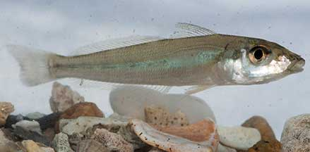
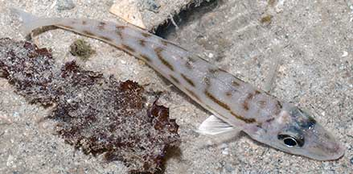

|
|
| fishes text index | photo index |
| Phylum Chordata > Subphylum Vertebrata > fishes |
| Whitings Family Sillaginidae updated Oct 2020
Where seen? These silvery topedo-shaped fishes are often encountered on many of our sandy shores especially near reefs. What are whitings? Whitings belong to the Family Sillaginidae. According to FishBase: the family has 3 genera and 31 species, found mainly in the Indo-west Pacific. Features: To about 30cm, those seen about 6-8cm. Long, slender silvery fishes with a torpedo-shaped body, large eyes and small mouth on a conical, sharp snout. Often without obvious markings, the various species of Sillago appear very similar in the field. |
 East Coast, Nov 08 |
 Chek Jawa, Apr 04 |
| The Silver sillago (Sillago sihama) is commonly seen
in coastal areas and even recorded in freshwater. It can grow to about
30cm. Body silvery often without any obvious markings. May have dusky
tips on the dorsal fins and tail fins. No dark blotch at the base
of the pectoral fins. Tail fins may have a whitish margin. These fishes
form schools. Adults bury themselves in sand when disturbed. The young
fish live out in the open sea, feeding on plankton. In Singapore,
this fish is also called 'pasir', which means 'sand' in Malay. The Trumpeter sillago (Sillago maculata) is found in deeper coastal waters but also in river mouths and mangrove creeks. It can grow about 30cm. There is a black spot at the base of the pectoral fin, the back and sides of the body with dark blotches. The upper and lower blotches are often joined, the upper blotches generally larger. They are found in deeper coastal waters but also in river mouths and mangrove creeks. Juveniles are found in shallow waters, moving into deeper waters as they mature. The Large-scale sillago (Sillago macrolepsis) can grow to about 20cm. Body yellowish, darker above, without any markings, dorsal fin dusky with a narrow blackish margin. Juveniles have a series of small brown spots along each side at the base of the dorsal fins. The Spotted sillago (Sillago burrus) is found in silty and muddy areas. It can grow to about 36cm. Body silvery with irregular dark blotches on the sides that may appear to be oblique bars. The upper blotches are small, an indistinct black spot at the base of the pectoral fin. It is found in silty and muddy areas. Sometimes confused with other small silvery fishes. More on how to tell apart small silvery fishes. |
 Pulau Hantu, Nov 12 |
 Kusu Island, Sep 10 |
| What do they eat? They eat small
animals found on the sea bottom such as worms, small shrimps and prawns. Human Uses: In some places, they are highly valued as seafood and some species are important in fish farming. They are sold fresh or frozen. Status and threats: Our whitings are not listed among the threatened animals of Singapore. But like other creatures of the intertidal zone, they are affected by human activities such as reclamation and pollution. Over-fishing can also have an impact on local populations. |
| Whitings on Singapore shores |
On wildsingapore
flickr
|
| Other sightings on Singapore shores |
| Family
Sillaginidae recorded for Singapore from Wee Y.C. and Peter K. L. Ng. 1994. A First Look at Biodiversity in Singapore.
|
Links
References
|